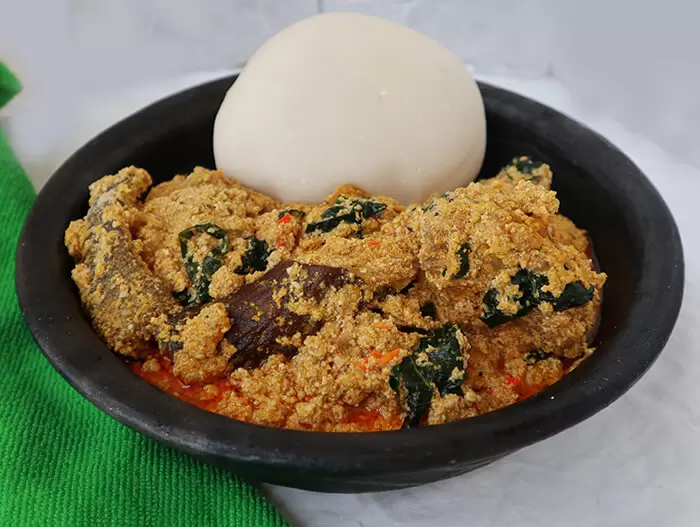

Egusi Soup

Description
Egusi soup is a Nigerian dish prepared from ground melon seeds. It is nutritious and contains vitamins, healthy oils, fiber and proteins. It is eaten with a traditional swallow foods like eba, semovita, fufu e.t.c
Ingredients
- 1KG beef
- 4 cups of egusi (melon)
- 500g Roasted fish.
- 1/2 a cup of ground crayfish
- Handful of sliced ugu (fluted pumpkin) leaves
- 2 seasoning cubes
- Salt to taste
- Pepper to taste (scotch bonnet).
- Medium-sized Stock fish head (okporoko)
- 20g Dawadawa or okpei (local ingredients)
Steps
- Grind the four cups of egusi with a dry blender or hand-grinding machine and set them aside in a bowl. Add about a cup of water to it and stir to make a very thick paste.
- Parboil the meat with all the ingredients for about ten minutes, then add water and cook till the meat is tender and the stock (water) is about to dry. Use two seasoning cubes, a teaspoon of salt and a half cup of sliced onions.
- Pour hot water over the stockfish in a bowl and wash thoroughly to remove sand, then set aside. Also, remove the center bone from the roasted fishes, wash and set aside too.
- Set your cooking pot on the fire and add 300ml of palm oil (red oil), allow to heat for a minute but do not allow to bleach. Add the egusi paste and keep stirring for the next eight to ten minutes to form seed-like crumbs.
- Then transfer the already cooked meat into the pot, stir.
- Add the washed dry fish, stockfish, ground crayfish, a seasoning cube, ground scotch bonnet pepper, and 2 cups of water. Then cover halfway and allow boiling for the next ten minutes.
- Stir occasionally to avoid burning. One spoon of ground dawadawa (local ingredients), and a taste for salt and pepper.
- Allow to simmer on low heat for 2 minutes, stir, and you just made a delicious pot of egusi soup
- Serve with hot eba or fufu